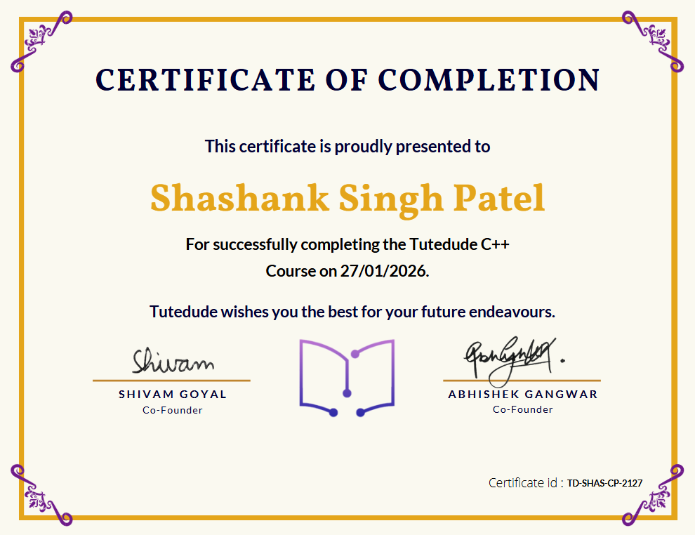
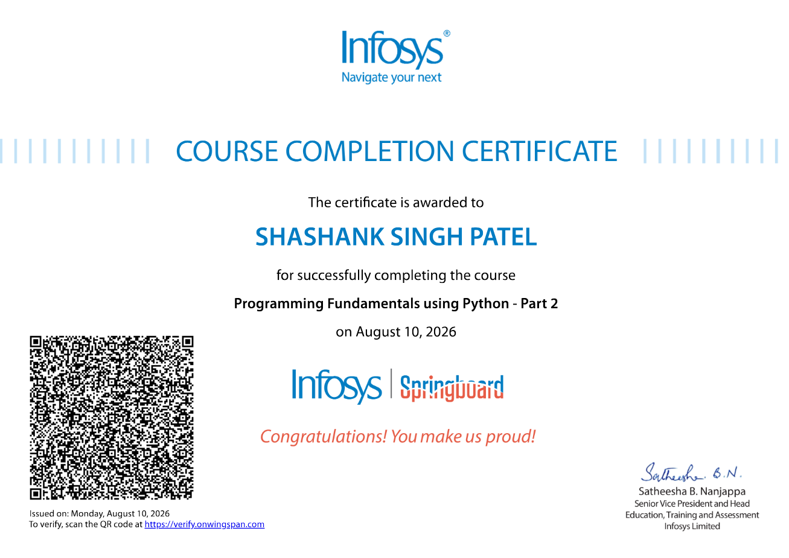

School
Senior Secondary & Secondary Education at Sunbeam School Mau.
I build things to understand how they work — from numerical libraries and web applications to terminal tools.
EXPLORE MY WORK ↓
01 def build(): 02 learn() 03 experiment() 04 refine() 05 repeat()Currently building with
I'm a Computer Science and Engineering student at Lovely Professional University, focused on learning by building.
I enjoy working close to the fundamentals: understanding data structures, writing systems-oriented C, designing Python libraries, and turning ideas into usable applications.
Senior Secondary & Secondary Education at Sunbeam School Mau.
Started Computer Science and Engineering at Lovely Professional University.
Expanded into Python libraries, Flask applications, terminal tools and regular DSA practice.
Improving projects, strengthening fundamentals, and exploring numerical computing and machine learning.

Tutedude

Infosys
Full-stack personal budget tracker with authentication, transaction management, monthly budgets, dashboard analytics and a JSON summary API.
VIEW REPOSITORY ↗Modular matrix library for creation and manipulation, with arithmetic, multiplication, transpose, determinant, cofactors, inverse and validation.
VIEW REPOSITORY ↗Lightweight terminal file explorer focused on keyboard-driven navigation, file listing, sorting, scrolling and terminal-aware interaction.
VIEW REPOSITORY ↗LANGUAGESPython · C · C++ · JavaScript
TECHNOLOGIESHTML · CSS · Flask · REST API
DATABASES / TOOLSMySQL · PostgreSQL · SQLite · Git · GitHub
CONCEPTSOOP · Modularization · Data Structures & Algorithms
SOFT SKILLSProblem solving · Team collaboration · Communication
Have an idea, project, or opportunity? I'd be happy to connect.
shashankpatel.vns@gmail.com